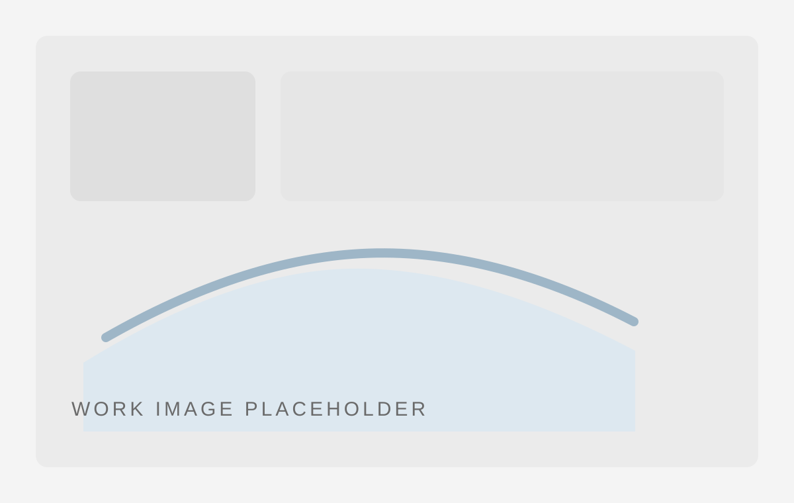
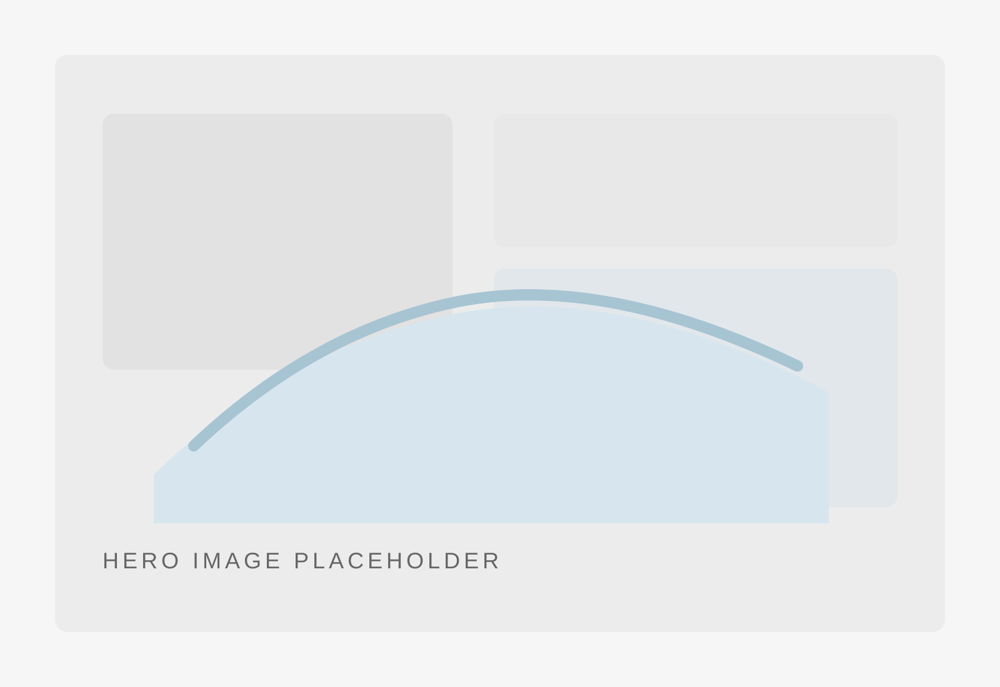
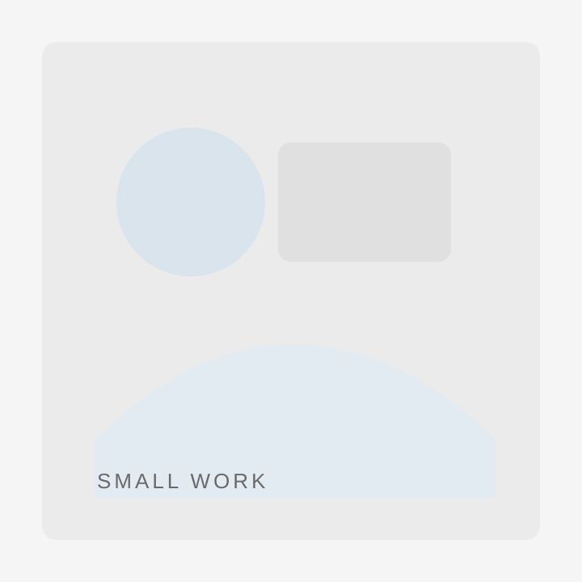

MS Queen Elizabeth
客船の量感と水平ラインを重視して構成した大型再現作品。展示空間に入った時の圧を大切にしています。
- サイズ
- 後日掲載
- ピース数
- 後日掲載
- 公開
- 作品ページへ
LEGO Works Portfolio
LEGO®作品 / ポートフォリオ
大型作品から小さな情景作品まで、LEGO®を用いた立体作品を制作しています。

Works Index
まずは現在のポートフォリオを代表する大型作品からご覧いただける構成に整理しています。
Large Works
代表作に続く大型作品群を、同じシリーズとして落ち着いて閲覧できる並びにしています。
Small Works
小さな情景や単体作品も、ひとつのシリーズとして見られるようにまとめています。

情景・建築・モチーフ作品を差し替えできる枠です。
短いキャプションで雰囲気を伝える想定です。
後からシリーズ単位で並び替えや追加がしやすい構造です。
個別作品ページへの導線にも発展できます。
Making / Notes
作品完成後の展示だけでなく、制作過程や記録の見せ方も今後のアーカイブとして整えていきます。
MS Queen Elizabeth と八坂神社西楼門には、制作記録映像への導線を配置予定です。
映像導線を準備中設計時の考え方や展示時の工夫など、作品解説より少し踏み込んだ記録をまとめるための枠です。
note連携を準備中展示会や学祭で作品横から見てもらう情報として、来歴や展示記録を整理する想定です。
展示記録を追加予定AR / 3D
コロナ禍に始めた、作品を実寸感とともに伝えるための試みです。トップでは簡潔に案内し、独自性として残します。
About
mol は LEGO®を用いた立体作品を制作しています。大型の再現作品から小さな情景作品まで、展示空間での見え方と、写真や画面越しの見え方の両方を意識して構成しています。
このトップページは、作品一覧を中心にしたポートフォリオ入口です。知人への紹介、展示横での案内、ビルダー同士の共有、そして時折の相談窓口として機能するよう整理しています。